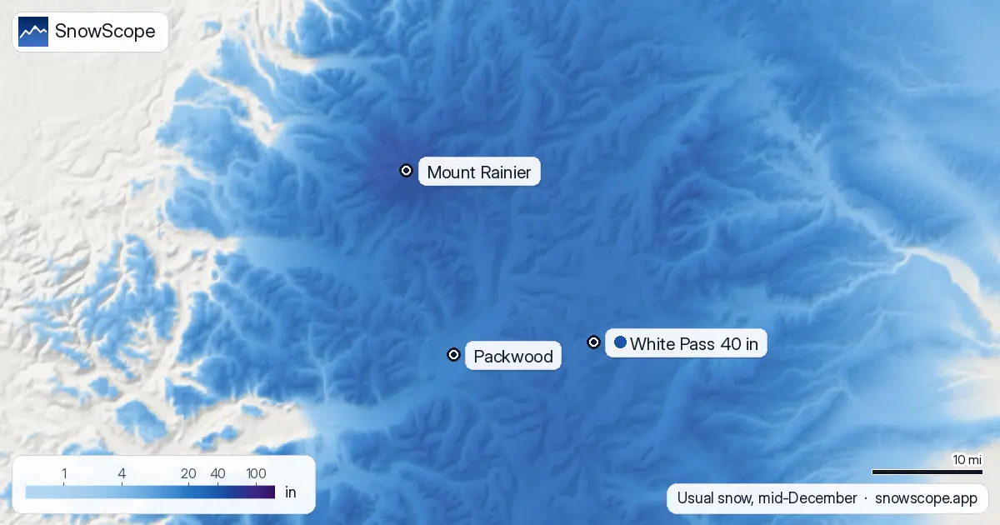

White Pass a dicembre: come prenotare una giornata di sci da 69 $ con reali probabilità di neve
White Pass premia gli sciatori che pianificano con anticipo e scelgono i giorni feriali. La seconda metà di dicembre è quando le probabilità di neve girano decisamente a tuo favore, ed è anche quando i biglietti online più convenienti rimangono accessibili se prenoti in anticipo.
Le previsioni neve in tempo reale per White Pass Ski Area nell'app SnowScopeAltezza neve, allerte powder e mappa 3D, gratis.
Dove si trova White Pass e perché costa meno
White Pass si trova sulla US-12 a est di Packwood, nell'ombra del Mount Rainier. L'area sciistica si estende da circa 4.480 ft (1.367 m) alla base fino a 6.520 ft (1.987 m) in vetta, con 8 impianti e circa 22 mi (36 km) di piste. Non c'è un villaggio resort, il che mantiene i prezzi dei biglietti più bassi rispetto ai grandi nomi del circuito del Pacifico nord-occidentale.
La neve arriva presto qui. In un inverno tipico, la neve stabile raggiunge la media quota a fine ottobre. Questo vantaggio iniziale conta per l'affidabilità.

Come funziona la tariffazione dinamica e quando bloccare 69 dollari
White Pass vende biglietti online con prezzi che salgono man mano che la data scelta si riempie. La tariffa più bassa è 69 dollari per i giorni a bassa affluenza (da lunedì a giovedì, non festivi) e 89 dollari per i giorni di alta affluenza (venerdì, sabato, domenica, giorni festivi). I prezzi salgono man mano che ti avvicini, raggiungendo 99 dollari a bassa affluenza e 119 dollari ad alta affluenza.
La strategia è semplice: scegli un giorno feriale con almeno qualche giorno di anticipo e compra online. Se aspetti che esca una previsione di neve e poi cerchi di prenotare un sabato di dicembre, ti ritroverai vicino al massimo della gamma.

Dicembre settimana per settimana: quando le probabilità di neve cambiano
Gli inverni passati mostrano una chiara salita di affidabilità durante dicembre. Nella settimana dal 30 novembre al 6 dicembre, il 74 % degli inverni ha avuto neve buona (una media settimanale di 20 in / 50 cm o più) a media quota. Questo sale all'85 % la settimana seguente, al 91 % dal 14 al 20 dicembre e al 96 % nell'ultima settimana prima di Capodanno.
Un tipico 15 dicembre, a media quota (circa 5.500 ft / 1.677 m) l'accumulo è di 40 in (102 cm), e in vetta raggiunge 42 in (107 cm). Entro il 31 dicembre, a media quota si arriva a 59 in (151 cm). Anche in un inverno magro (uno su dieci), il 15 porta 17 in (42 cm) a media quota—abbastanza per le piste battute ma non per la polvere profonda.
Come White Pass si confronta con Mt. Baker e Timberline
Mt. Baker, a nord-ovest, registra neve più profonda a metà dicembre: 46 in (116 cm) è tipico il 15. Ma Mt. Baker vende i biglietti solo il giorno della tua visita, senza sconto anticipato. Aspettati di pagare 98,80 dollari a bassa affluenza o 115,42 dollari nei giorni di alta affluenza.
Timberline sul Mount Hood chiede 129 dollari a bassa affluenza e 161 dollari ad alta affluenza per una giornata intera. White Pass li batte entrambi sul prezzo se prenoti un giorno feriale a bassa affluenza con anticipo. Mt. Baker ha un vantaggio su White Pass per la neve ma costa di più e ti costringe a decidere la mattina della tua partenza.
L'Indy Pass: il calcolo dei multi-resort
White Pass aderisce a più di 300 resort nella rete Indy Pass per la stagione 2026-27. L'Indy Base Pass costa 419 dollari per adulti e garantisce due biglietti giornalieri a ogni area membro, con alcune date escluse. L'Indy+ Pass a 469 dollari rimuove le esclusioni.
Se prevedi tre o quattro gite sulle montagne minori questo inverno—mescolando White Pass con soste in altre aree membro—il pass potrebbe offrirti un valore migliore rispetto alla prenotazione individuale di giorni da 69 a 99 dollari. Per un piano con una o due visite, i biglietti online a 69 dollari a bassa affluenza probabilmente ti faranno risparmiare denaro.
Consigli per sciatori
- Prenota una visita nei giorni feriali con almeno qualche giorno di anticipo per bloccare il prezzo minimo di 69 dollari.
- Se il tuo programma lo consente, punta alla settimana dal 14 al 20 dicembre o successiva: gli inverni passati mostrano il 91-96 % di stagioni con buona neve allora, rispetto al 74 % a inizio dicembre.
- Prima di partire, controlla il rapporto sul passo US-12: il tracciato può chiudersi o richiedere catene durante le tempeste.
- L'inverno scorso è stato insolitamente scarso qui, quindi non lasciare che lo condizioni le tue aspettative. Controlla la mappa SnowScope la settimana prima di partire per vedere come sta andando questa stagione.
Su questi numeri
Le altezze neve delle località sono la neve più alta sui pendii superiori alla data indicata; sono stime per un'area, non una misura in un punto. Le previsioni possono cambiare. Leggi sempre il bollettino valanghe ufficiale prima del fuoripista.
Bollettini valanghe ufficiali: avalanche.org (US national portal)
Cita questo articolo
Per ricerca, didattica o stampa: numeri e grafici sono liberamente riutilizzabili con licenza CC BY 4.0 citando così.
SnowScope (2026), White Pass a dicembre: come prenotare una giornata di sci da 69 $ con reali probabilità di neve, https://snowscope.app/blog/it/2026/11/white-pass-december-skiing-budget-2026.html, consultato il 2026-11-14
SnowScope (Atlas Labs). (2026, November 14). White Pass a dicembre: come prenotare una giornata di sci da 69 $ con reali probabilità di neve. SnowScope snow reports. https://snowscope.app/blog/it/2026/11/white-pass-december-skiing-budget-2026.html
BibTeX
@misc{snowscope2026whitepassdecemberskiingb,
author = {{SnowScope (Atlas Labs)}},
title = {White Pass a dicembre: come prenotare una giornata di sci da 69 $ con reali probabilità di neve},
year = {2026},
month = nov,
howpublished = {\url{https://snowscope.app/blog/it/2026/11/white-pass-december-skiing-budget-2026.html}},
note = {Published 2026-11-14 17:07 UTC; accessed 2026-11-14}
}· CC BY 4.0 · Metodi, dati e strumenti →
White Pass Ski Area: neve e temperatura per quota, quest'inverno vs lo scorso (strumenti) →
Segui White Pass Ski Area
Gratis: un messaggio quando arriva la neve e il meteo ogni mattina.